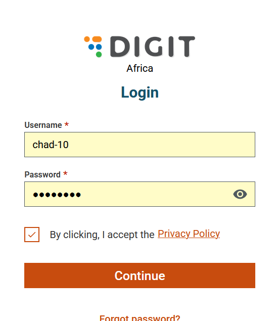

Driving Data-Driven Solutions for Health and Development
eGov HCM TRAINING GUIDE
Configuration of ITN Mass Campaign
Step-by-Step Training Manual
STEP 0 OF 25
📋TABLE OF CONTENTS
Welcome to the eGov HCM Training Guide for ITN Mass Campaign Configuration. This guide contains 25 steps to help you configure the system. Click on any step below to jump directly, or use the NEXT button to start from the beginning.
1Introduction to eGov HCM
2System Requirements
3Logging In
4Dashboard Navigation
5Creating a Campaign
6Campaign Details
7Campaign Boundaries
8Target Population
9Registration Points
10Distribution Sites
11Stock Management
12User Accounts
13User Roles
14Mobile App Settings
15Offline Sync
16Beneficiary Registration
17Household Targeting
18ITN Allocation Rules
19Distribution Workflow
20Reports & Dashboards
21SMS Notifications
22Quality Assurance
23Testing
24Go-Live Checklist
25Troubleshooting
1INTRODUCTION TO eGov HCM
Begin by understanding the eGov Health Campaign Management (HCM) platform. This system is designed to support health campaigns including ITN distribution, vaccination drives, and mass drug administration. The platform integrates with DHIS2 for reporting and provides mobile applications for field data collection.

💡 TIP
Familiarize yourself with the official eGov HCM documentation available at the help center before starting configuration.
2SYSTEM REQUIREMENTS & ACCESS
Verify that your system meets the minimum requirements: Modern web browser (Chrome, Firefox, or Edge), stable internet connection (minimum 2 Mbps), and administrator credentials. Clear your browser cache before accessing the system for the first time.
💡 TIP
Chrome browser is recommended for optimal performance with the eGov HCM platform.
3LOGGING INTO THE eGov HCM PLATFORM
Navigate to the eGov HCM login page. Enter your administrator username and password. If this is your first login, you will be prompted to change your password. Use a strong password with at least 12 characters including uppercase, lowercase, numbers, and special characters.
💡 TIP
Enable two-factor authentication (2FA) for enhanced security on administrator accounts.
4NAVIGATING THE DASHBOARD
After successful login, you will see the main dashboard. The dashboard displays: Campaign overview widgets, Quick action buttons, Recent activity feed, and System notifications. Explore each section to familiarize yourself with the interface layout.
💡 TIP
Customize your dashboard by dragging and dropping widgets to prioritize the information most relevant to your role.
5CREATING A NEW CAMPAIGN
From the main menu, click on 'Campaigns' then 'Create New Campaign'. Select 'ITN Mass Distribution' as the campaign type. Enter a unique campaign name following the naming convention: [Region]_ITN_[Year]_[Quarter] (e.g., Western_ITN_2025_Q1).
💡 TIP
Use consistent naming conventions across all campaigns to make searching and reporting easier.
6CONFIGURING CAMPAIGN DETAILS
Complete the campaign details form: Campaign Name, Description, Start Date, End Date, Target Coverage (%), and Campaign Manager. Set the campaign status to 'Planning' initially. Add campaign objectives and key performance indicators (KPIs).
💡 TIP
Set realistic target coverage based on historical data from previous campaigns in the region.
7SETTING CAMPAIGN BOUNDARIES
Define the geographic scope of your campaign. Select the target regions, districts, chiefdoms, and wards. Use the hierarchical selection tool: First select Region → then District → then Chiefdom → finally Ward/Village. You can select multiple locations at each level.
💡 TIP
Cross-reference your selection with the national org unit hierarchy in DHIS2 to ensure alignment.
8DEFINING TARGET POPULATION
Enter the target population data for your campaign. Configure: Total households, Total population, Children under 5, Pregnant women, and Population per net ratio. Import population data from CSV or enter manually by location.
💡 TIP
Use the most recent census or projection data from Statistics Sierra Leone for accurate targeting.
9CONFIGURING REGISTRATION POINTS
Set up registration points where beneficiaries will be registered. Click 'Add Registration Point' and enter: Point Name, GPS Coordinates, Operating Hours, and Assigned Staff. Registration points can be health facilities, schools, or community centers.
💡 TIP
Ensure each registration point has mobile network coverage for real-time data sync.
10SETTING UP DISTRIBUTION SITES
Configure ITN distribution sites separate from registration. For each site, enter: Site Name, Location (GPS), Storage Capacity, Distribution Schedule, and Site Supervisor. Link distribution sites to their corresponding registration points.
💡 TIP
Position distribution sites within 5km of most households to maximize accessibility.
11CONFIGURING ITN STOCK MANAGEMENT
Set up the stock management module. Configure: Initial Stock Levels, Buffer Stock Percentage (recommended 10%), Minimum Reorder Level, and Stock Transfer Rules. Enable real-time stock tracking and configure low-stock alerts.
💡 TIP
Set up SMS alerts for stock levels below 20% to ensure timely replenishment.
12CREATING USER ACCOUNTS
Navigate to 'User Management' → 'Create User'. For each user enter: Full Name, Username, Email, Phone Number, Organization Unit assignment, and Temporary Password. Create accounts for: Campaign Managers, Site Supervisors, Registration Clerks, and Data Entry Staff.
💡 TIP
Use email addresses following a standard format: firstname.lastname@domain.org for easy identification.
13ASSIGNING USER ROLES
Configure role-based access control. Available roles include: Campaign Administrator (full access), Site Manager (site-level access), Registration Clerk (registration only), Distribution Agent (distribution only), and Viewer (read-only). Assign appropriate roles based on job responsibilities.
💡 TIP
Follow the principle of least privilege - only grant the minimum permissions required for each role.
14CONFIGURING MOBILE APP SETTINGS
Configure the mobile application for field data collection. Go to 'Settings' → 'Mobile Configuration'. Set: Data Collection Forms, Validation Rules, GPS Accuracy Threshold (≤10 meters), Photo Requirements, and Offline Data Retention Period.
💡 TIP
Test the mobile configuration on multiple device types before deploying to field teams.
15SETTING UP OFFLINE SYNC
Configure offline functionality for areas with poor connectivity. Enable: Offline Mode, set Sync Interval (recommended: 30 minutes when online), configure Conflict Resolution Rules, and set Maximum Offline Storage Period (recommended: 7 days).
💡 TIP
Train field staff on manual sync procedures for areas with intermittent connectivity.
16CONFIGURING BENEFICIARY REGISTRATION
Set up the beneficiary registration workflow. Configure required fields: Household ID, Head of Household Name, GPS Location, Number of Household Members, Sleeping Spaces, Existing Nets, and Vulnerability Status. Enable biometric capture if available.
💡 TIP
Include a photo capture field for household verification during distribution.
17SETTING UP HOUSEHOLD TARGETING
Configure household targeting criteria. Set: Nets per sleeping space ratio (typically 1:2), Maximum nets per household, Priority scoring for vulnerable households (pregnant women, children under 5), and Geographic targeting rules.
💡 TIP
Align targeting criteria with WHO guidelines and national ITN distribution policies.
18CONFIGURING ITN ALLOCATION RULES
Define how nets are allocated to beneficiaries. Configure: Base Allocation Formula (e.g., Household Members / 2, rounded up), Maximum Allocation Cap, Replacement Rules for existing damaged nets, and Special Allocation for health facilities.
💡 TIP
Test allocation rules with sample data to verify correct calculations before go-live.
19SETTING DISTRIBUTION WORKFLOW
Configure the end-to-end distribution workflow: Registration → Verification → Allocation Calculation → Net Issuance → Receipt Confirmation → SMS Notification. Set approval requirements for high-value allocations and exception handling procedures.
💡 TIP
Build in a verification step to cross-check registration data before net distribution.
20CONFIGURING REPORTS & DASHBOARDS
Set up monitoring dashboards and reports. Create: Daily Registration Summary, Distribution Progress by Location, Stock Status Report, Coverage Map, and Campaign KPI Dashboard. Configure automated report generation and distribution schedules.
💡 TIP
Schedule daily summary reports to be sent automatically to campaign managers at 6:00 PM.
21SETTING UP SMS NOTIFICATIONS
Configure SMS notifications for key events. Set up messages for: Registration Confirmation, Distribution Appointment Reminder, Net Collection Reminder, and Campaign Updates. Configure SMS gateway integration and message templates.
💡 TIP
Keep SMS messages under 160 characters to avoid splitting across multiple texts.
22QUALITY ASSURANCE CONFIGURATION
Set up quality assurance checkpoints. Configure: Data Validation Rules, Duplicate Detection Settings, GPS Accuracy Requirements, Photo Quality Standards, and Supervisor Verification Requirements. Enable random sampling for quality audits.
💡 TIP
Set duplicate detection to flag households within 50 meters with similar names.
23TESTING THE CONFIGURATION
Thoroughly test all configured components. Create test households, run through complete registration and distribution workflow, verify reports generate correctly, test mobile app functionality including offline mode, and confirm SMS notifications are delivered.
💡 TIP
Use a dedicated test campaign with test data - never test with production data.
24GOING LIVE CHECKLIST
Complete the pre-launch checklist: All user accounts created and tested, Mobile apps deployed to field devices, Stock loaded into system, All distribution sites configured, Dashboards verified, Communication materials prepared, and Backup procedures confirmed.
💡 TIP
Schedule go-live for early week (Monday/Tuesday) to allow time for issue resolution.
25TROUBLESHOOTING COMMON ISSUES
Know how to resolve common issues: Login failures (reset password, check account status), Sync errors (check internet connection, clear app cache), Duplicate records (use merge function), Stock discrepancies (run reconciliation report), and Report errors (verify date ranges and filters).
💡 TIP
Document all issues and resolutions in the campaign log for future reference.